가스기사 (2018-03-04 기출문제)
1과목: 가스유체역학
1. 성능이 동일한 n대의 펌프를 서로 병렬로 연결하고 원래와 같은 양정에서 작동시킬 때 유체의 토출량은?
- 1/n로 감소한다.
- n배로 증가한다.
- 원래와 동일하다.
- 1/(2n)로 감소한다.
(정답률: 85%)

2. 도플러효과(doppler effect)를 이용한 유량계는?
- 에뉴바 유량계
- 초음파 유량계
- 오벌 유량계
- 열선 유량계
(정답률: 80%)
3. 다음 중 증기의 분류로 액체를 수송하는 펌프는?
- 피스톤펌프
- 제트펌프
- 기어펌프
- 수격펌프
(정답률: 74%)
4. 분류에 수직으로 놓여진 평판이 분류와 같은 방향으로 U의 속도로 움직일 때 분류가 V의 속도로 평판에 충돌한다면 평판에 작용하는 힘은 얼마인가? (단, p는 유체 밀도, A는 분류의 면적이고 V＞U이다.)
- pA(V-U)2
- pA(V＋U)2
- pA(V-U)
- pA(V＋U)
(정답률: 55%)
5. 노점 (dew point)에 대한 설명으로 틀린 것은?
- 액체와 기체의 비체적이 같아지는 온도이다.
- 동압과정에서 응축이 시작되는 온도이다.
- 대기 중 수증기의 분압이 그 온도에서 포화수증기압과 같아지는 온도이다.
- 상대습도가 100% 가 되는 온도이다.
(정답률: 64%)
6. 반지름 40㎝인 원통 속에 물을 담아 30rpm으로 회전시킬 때 수면의 가장 높은 부분과 가장 낮은 부분의 높이 차는 약 몇 m인가?
- 0.002
- 0.02
- 0.04
- 0.08
(정답률: 25%)
7. 일반적으로 다음 장치에서 발생하는 압력차가 작은 것부터 큰 순서대로 옳게 나열한 것은?
- 블로어＜팬＜압축기
- 압축기＜팬＜블로어
- 팬＜블로어＜압축기
- 블로어＜압축기＜팬
(정답률: 85%)
8. 수평 원관 내에서의 유체흐름을 설명하는 Hagen - Poiseuille식을 얻기 위해 필요한 가정이 아닌 것은?
- 완전히 발달된 흐름
- 정상상태 흐름
- 층류
- 포텐셜 흐름
(정답률: 77%)
9. 관 속 흐름에서 임계레이놀즈수를 2100으로 할 때 지름이 l0㎝인 관에 16℃의 물이 흐르는 경우의 임계속도는? (단, 16℃ 물의 동점성계수는 1.12x 10-6m2/s이다.)(오류 신고가 접수된 문제입니다. 반드시 정답과 해설을 확인하시기 바랍니다.)
- 0.024m/s
- 0.42m/s
- 2.1m/s
- 21.1m/s
(정답률: 61%)
10. 다음 유체에 관한 설명 중 옳은 것을 모두 나타낸 것은?
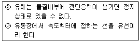
- ㉮
- ㉯
- ㉮, ㉯
- 모두 틀림
(정답률: 67%)
11. 서징(surging) 현상의 발생원인으로 거리가 가장 먼 것은?
- 펌프의 유량-양정곡선이 우향상승 구배 곡선일 때
- 배관 중에 수조나 공기조가 있을 때
- 유량조절밸브가 수조나 공기조의 뒤쪽에 있을 때
- 관속을 흐르는 유체의 유속이 급격히 변화될 때
(정답률: 55%)
12. 유체 속 한 점에서의 압력이 방향에 관계없이 동일한 값을 갖는 경우로 틀린 것은?
- 유체가 정지한 경우
- 비점성유체가 유통하는 경우
- 유체층 사이에 상대운동이 없이 유동하는 경우
- 유체가 층류로 유통하는 경우
(정답률: 56%)
13. 100kPa, 25℃에 있는 이상기체를 등엔트로피 과정으로 135kPa까지 압축하였다. 압축 후의 온도는 약 몇 ℃인가? (단, 이 기체의 정압비열 Cp는 1.213kJ/㎏·K이고 정적비열 Cv는 0.821kJ/㎏·K이다.)
- 45.5
- 55.5
- 65.5
- 75.5
(정답률: 69%)
14. 피토관을 이용하여 유속을 측정하는 것과 관련된 설명으로 틀린 것은?
- 피토관의 입구에는 동압과 정압의 합인 정체압이 작용한다.
- 측정원리는 베르누이 정리이다.
- 측정된 유속은 정체압과 정압 차이의 제곱근에 비례한다.
- 동압과 정압의 차를 측정한다.
(정답률: 60%)
15. 비열비가 1.2이고 기체상수가 200J/㎏·K인 기체에서의 음속이 400m/s이다. 이때, 기체의 온도는 약 얼마인가?
- 253℃
- 394℃
- 520℃
- 667℃
(정답률: 66%)
16. 그림과 같은 단열 덕트 내의 유동에서 마하수 M＞1일 때 압축성 유체의 속도와 압력의 변화를 옳게 나타낸 것은?
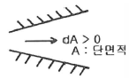
- 속도증가, 압력증가
- 속도감소, 압력감소
- 속도증가, 압력감소
- 속도감소, 압력증가
(정답률: 71%)
17. 난류에서 전단응력 (Shear Stress) τt를 다음 식으로 나타낼 때 η는 무엇을 나타낸 것인가? (단, du/dy는 속도구배를 나타낸다.)
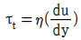
- 절대점도
- 비교점도
- 에디점도
- 중력점도
(정답률: 70%)
18. 덕트 내 압축성 유동에 대한 에너지 방정식과 직접적으로 관련되지 않는 변수는?
- 위치에너지
- 운동에너지
- 엔트로피
- 엔탈피
(정답률: 73%)
19. 뉴턴의 점성법칙을 옳게 나타낸 것은? (단, 전단응력은 τ, 유체속도는 u, 점성계수는 μ, 벽면으로부터의 거리는 y로 나타낸다.)
- τ=(1/μ)·[(dy)/(du)]
- τ=μ·[(du)/(dy)]
- τ=(1/μ)·[(du)/(dy)]
- τ=μ·[(dy)/(du)]
(정답률: 78%)
20. 급격확대관에서 확대에 따른 손실수두를 나타내는 식은? (단, Va는 확대 전 평균유속, Vb는 확대 후 평균유속, g는 중력가속도이다.)
- (Va-Vb)3
- (Va-Vb)
- (Va-Vb)2/2g
- (Va-Vb)/2g
(정답률: 80%)
2과목: 연소공학
21. 202.65kPa, 25℃의 공기를 10.1325kPa으로 단열팽창시키면 온도는 약 몇 K인가? (단, 공기의 비열비는 1.4로 한다.)
- 126
- 154
- 168
- 176
(정답률: 62%)
22. 안전성평가 기법 중 시스템을 하위 시스템으로 점점 좁혀가고 고장에 대해 그 영향을 기록하여 평가하는 방법으로, 서브시스템 위험분석이나 시스템 위험분석을 위하여 일반적으로 사용되는 전형적인 정성적, 귀납적 분석기법으로 시스템에 영향을 미치는 모든 요소의 고장을 형태별로 분석하여 그 영향을 검토하는 기법은?
- 결함수분석(FTA)
- 원인결과분석(CCA)
- 고장형태 영향분석(FMEA)
- 위험 및 운전성 검토(HAZOP)
(정답률: 72%)
23. 과잉공기가 너무 많은 경우의 현상이 아닌 것은?
- 열효율을 감소시킨다.
- 연소온도가 증가한다.
- 배기가스의 열손실을 증대시킨다.
- 연소가스량이 증가하여 통풍을 저해한다.
(정답률: 65%)
24. 다음은 Air-standard otto cycle의 P-V diagram이다. 이 cycle의 효율(η)을 옳게 나타낸 것은? (단, 정적열용량은 일정하다.)
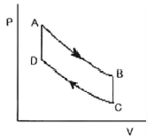
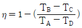
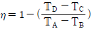
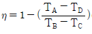
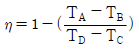
(정답률: 68%)
25. 이상기체의 성질에 대한 설명으로 틀린 것은?
- 보 일·샤를의 법칙을 만족한다.
- 아보가드로의 법칙을 따른다.
- 비열비는 온도에 관계없이 일정하다.
- 내부에너지는 온도와 무관하며 압력에 의해서만 결정된다.
(정답률: 82%)
26. 과잉 공기 계수가 1일 때 224Nm3의 공기로 탄소는 약 몇 ㎏을 완전 연소시킬 수 있는가?
- 20.1
- 23.4
- 25.2
- 27.3
(정답률: 49%)
27. 액체 프로판이 298K, O.1MPa에서 이론공기를 이용하여 연소하고 있을 때 고발열량은 약 몇 MJ/㎏인가? (단, 연료의 증발엔탈피는 370kJ/㎏이고, 기체상태 C3H8의 생성엔탈피는 -103909kJ/kmol, CO2의 생성엔탈피는 -393757kJ/kmol, 액체 및 기체상태 H2O의 생성엔탈피는 각각 -286010kJ/kmol, -241971kJ/kmol이다.)
- 44
- 46
- 50
- 22⑤
(정답률: 48%)
28. 헬륨을 냉매로 하는 극저온용 가스냉동기의 기본사이클은?
- 르누아사이클
- 역아트킨슨사이클
- 역에릭슨사이클
- 역스틸링사이클
(정답률: 76%)
29. 다음 [그림]은 오토사이클 선도이다. 계로부터 열이 방출되는 과정은?
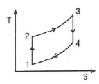
- 1→2과정
- 2→3과정
- 3→4과정
- 4→1과정
(정답률: 65%)
30. 다음과 같은 용적조성을 가지는 혼합기체 91.2g 이 27℃, 1atm에서 차지하는 부피는 약 몇 L인가?
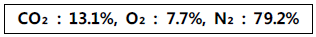
- 49.2
- 54.2
- 64.8
- 73.8
(정답률: 48%)
31. 이상기체에 대한 단열온도 상승은 열역학 단열압축식으로 계산될 수 있다. 다음 중 열역학 단열압축식이 바르게 표현된 것은? (단, Tf는 최종 절대온도, Ti는 처음 절대온도, Pf는 최종 절대압력, Pi는 처음 절대압력, r은 비열비이다.)
- Ti＝Tf(Pf/ Pi)(r-1)/r
- Ti＝Tf(Pf/ Pi)r/(1-r)
- Tf＝Ti(Pf/ Pi)r/(r-1)
- Tf＝Ti(Pf/ Pi)(r-1)/r
(정답률: 60%)
32. 조성이 C6H10O5인 어떤 물질 l.0kmol을 완전 연소시킬 때 연소가스 중의 질소의 양은 약 몇 ㎏인가? (단, 공기 중의 산소는 23w%, 질소는 77w%이다.)
- 543
- 643
- 57.35
- 67.35
(정답률: 49%)
33. 다음 [그림]은 프로판-산소, 수소- 공기, 에틸렌- 공기, 일산화탄소- 공기의 층류연소 속도를 나타낸 것이다. 이 중 프로판-산소 혼합기의 층류 연소속도를 나타낸 것은?
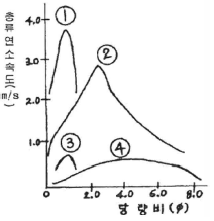
- ①
- ②
- ③
- ④
(정답률: 75%)
34. 산소의 성질, 취급 등에 대한 설명으로 틀린 것은?
- 산화력이 아주 크다.
- 임계압력이 25MPa이다.
- 공기액화분리기 내에 아세틸렌이나 탄화수소가 축적되면 방출시켜야 한다.
- 고압에서 유기물과 접촉시키면 위험하다.
(정답률: 79%)
35. 폭굉 (detonation) 에서 유도거리가 짧아질 수 있는 경우가 아닌 것은?
- 압력이 높을수록
- 관경이 굵을수록
- 점화원의 에너지가 클수록
- 관 속에 방해물이 많을수록
(정답률: 67%)
36. 다음 중 단위 질량당 방출되는 화학적 에너지인 연소열(kJ/g)이 가장 낮은 것은?
- 메탄
- 프로판
- 일산화탄소
- 에탄올
(정답률: 56%)
37. 전기기기의 불꽃, 아크가 발생하는 부분을 절연유에 격납하여 폭발가스에 점화되지 않도록 한 방폭구조는?
- 유입방폭구조
- 내압방폭구조
- 안전증방폭구조
- 본질안전방폭구조
(정답률: 64%)
38. “어떠한 방법으로든 물체의 용도를 절대영도로 내릴 수는 없다.”라고 표현한 사람은?
- Kelvin
- Planck
- Nernst
- Carnot
(정답률: 62%)
39. Carnot 기관이 12.6kJ의 열을 공급받고 5.2kJ의 열을 배출한다면 동력기관의 효율은 약 몇 %인가?
- 33.2
- 43.2
- 58.7
- 68.4
(정답률: 72%)
40. 비열에 대한 설명으로 옳지 않은 것은?
- 정압비열은 정적비열보다 항상 크다.
- 물질의 비열은 물질의 종류와 온도에 따라 달라진다.
- 비열비가 큰 물질일수록 압축 후의 온도가 더 높다.
- 물은 비열이 적어 공기보다 온도를 증가시키기 어렵고 열 용량도 적다.
(정답률: 71%)
3과목: 가스설비
41. 액화천연가스 중 가장 많이 함유되어 있는 것은?
- 메탄
- 에탄
- 프로판
- 일산화탄소
(정답률: 79%)
42. 펌프를 운전할 때 펌프 내에 액이 충만하지 않으면 공회전 하여 펌핑이 이루어지지 않는다. 이러한 현상을 방지하기 위하여 펌프 내에 액을 충만시키는 것을 무엇이라 하는가?
- 맥동
- 캐비테이션
- 서징
- 프라이밍
(정답률: 81%)
43. LNG에 대한 설명으로 틀릴 것은?
- 대량의 천연가스를 액화하려면 3원 캐스케이드 액화사이클을 채택한다.
- LNG 저장탱크는 일반적으로 2중 탱크로 구성된다.
- 액화 전의 전처리로 제진, 탈수, 탈탄산 가스 등의 공정은 필요하지 않다.
- 주성분인 메탄은 비점이 약 -163℃이다.
(정답률: 71%)
44. 공기액화분리장치에 아세틸렌가스가 혼입되면 안 되는 이유로 가장 옳은 것은?
- 산소의 순도가 저하
- 파이프 내부가 동결되어 막힘
- 질소와 산소의 분리작용에 방해
- 응고되어 있다가 구리와 접촉하여 산소 중에서 폭발
(정답률: 87%)
45. 나프타 (Naphtha)에 대한 설명으로 틀린 것은?
- 비점 200℃ 이하의 유분이다.
- 헤비 나프타가 옥탄가가 높다.
- 도시가스의 증열용으로 이용된다.
- 파라핀계 탄화수소의 함량이 높은 것이 좋다.
(정답률: 76%)
46. 가연성가스 용기의 도색 표시 가 잘못된 것은? (단, 용기는 공업용이다.)
- 액화염소 : 갈색
- 아세틸렌 : 황색
- 액화탄산가스 : 청색
- 액화암모니아 : 회색
(정답률: 74%)
47. 공기액화분리장치에서 내부 세정제로 사용되는 것은?
- CCl4
- H2SO4
- NaOH
- KOH
(정답률: 69%)
48. 고압가스용 스프링식 안전밸브의 구조에 대한 설명으로 틀린 것은?
- 밸브 시트는 이탈되지 않도록 밸브 몸통에 부착되어야 한다.
- 안전밸브는 압력을 마음대로 조정할 수 없도록 봉인된 구조로 한다.
- 가연성가스 또는 독성가스용의 안전밸브는 개방형으로 한다.
- 안전밸브는 그 일부가 파손되어도 충분한 분출량을 얻어야한다.
(정답률: 71%)
49. 0.1MPa·abs, 20℃의 공기를 1.5MPa·abs까지 2단 압축할 경우 중간 압력 Pm는 약 몇 MPa·abs인가?
- 0.29
- 0.39
- 0.49
- 0.59
(정답률: 55%)
50. 가스보일러에 설치되어 있지 않은 안전장치는?
- 전도안전장치
- 과열방지장치
- 헛불방지장치
- 과압방지장치
(정답률: 75%)
51. 검사에 합격한 가스용품에는 국가표준기본법에 따른 국가통합인증마크를 부착하여야 한다. 다음 중 국가통합인증마크를 의미하는 것은?
- KA
- KE
- KS
- KC
(정답률: 77%)
52. 저압배관의 관지름 설계 시에는 Pole식을 주로 이용한다. 배관의 내경이 2배가 되면 유량은 약 몇 배로 되는가?
- 2.00
- 4.00
- 5.66
- 6.28
(정답률: 48%)
53. LPG( 액체) 1㎏이 기화했을 때 표준상태에서의 체적은 약 몇 L가 되는가? (단, LPG의 조성 은 프로판 80wt%, 부탄 20wt%이다.)
- 387
- 485
- 584
- 783
(정답률: 54%)
54. 고압가스저장설비에서 수소와 산소가 통일한 조건에서 대기중에 누출되었다면 확산속도는 어떻게 되겠는가?
- 수소가 산소보다 2배 빠르다.
- 수소가 산소보다 4배 빠르다.
- 수소가 산소보다 8배 빠르다.
- 수소가 산소보다 16배 빠르다.
(정답률: 70%)
55. 전양정이 20m, 송출량이 1.5m3/min, 효율이 72%인 펌프의 축동력은 약 몇 kW인가?
- 5.8kW
- 6.8kW
- 7.8kW
- 8.8kW
(정답률: 74%)
56. 액화석유가스를 이송할 때 펌프를 이용하는 방법에 비하여 압축기를 이용할 때의 장점에 해당하지 않는 것은?
- 베이퍼록 현상이 없다.
- 잔가스 회수가 가능하다.
- 서징 (Surging)현상이 없다.
- 충전작업 시간이 단축된다.
(정답률: 62%)
57. 액화염소 사용시설 중 저장설비는 저장능력이 몇 ㎏이상일 때, 안전거리를 유지하여야 하는가?
- 300㎏
- 500㎏
- 1000㎏
- 5000㎏
(정답률: 61%)
58. 도시가스의 누출 시 감지할 수 있도록 첨가하는 것으로서 냄새가 나는 물질(부취제)에 대 한 설명으로 옳은 것은?
- THT는 경구투여시에는 독성이 강하다.
- THT는 TBM에 비해 취기 강도가 크다.
- THT는 TBM에 비해 토양 투과성이 좋다
- THT는 TBM에 비해 화학적으로 안정하다.
(정답률: 59%)
59. 다음 중 특수 고압가스가 아닌 것은?
- 포스겐
- 액화알진
- 디실란
- 세렌화수소
(정답률: 78%)
60. 오토클레이브(Autoclave)의 종류가 아닌 것은?
- 교반형
- 가스교반형
- 피스톤형
- 진탕형
(정답률: 71%)
4과목: 가스안전관리
61. 차량에 고정된 탱크 운반차량의 기준으로 옳지 않은 것은?
- 이입작업 시 차바퀴 전후를 차바퀴 고정목 등으로 확실하게 고정시킨다.
- 저온 및 초저온 가스의 경우에는 면장갑을 끼고 작업한다.
- 탱크운전자는 이입작업이 종료될 때까지 탱크로리 차량의 긴급차단장치 부근에 위치한다.
- 이입작업은 그 사업소의 안전관리자 책임하에 차량의 운전자가 한다.
(정답률: 72%)
62. 용기저장실에서 가스로 인한 폭발사고가 발생되었을 때 그 원인으로 가장 거리가 먼 것은?
- 누출경보기의 미작동
- 드레인밸브의 작동
- 통풍구의 환기능력 부족
- 배관 이음매 부분의 결함
(정답률: 80%)
63. 저장탱크에 의한 액화석유가스사용시설에서 지반조사의 기준에 대한 설명으로 틀린 것은?
- 저장 및 가스설비에 대하여 제 1차 지반조사를 한다.
- 제1차 지반조사방법은 드릴링을 실시하는 것을 원칙으로 한다.
- 지반조사 위치는 저장설비 외면으로부터 10m 이내에서 2곳 이상 실시한다.
- 표준관입시험은 표준 관입시험 방법에 따라 N 값을 구한다.
(정답률: 78%)
64. 액화가스 저장탱크의 저장능력 산정 기준식으로 옳은 것은?(단, Q 및 W는 저장능력, P는 최고충전압력, V1, V2는 내용적, d는 비중, C는 상수이다.)
- Q＝(10p＋1)V1
- W＝0.9dV2
- W＝V2/C
- W＝C/V2
(정답률: 70%)
65. 가스의 성질에 대한 설명으로 틀릴 것은?
- 메탄, 아세틸렌 동의 가연성 가스의 농도는 천정부근이 가장 높다.
- 벤젠, 가솔린 등의 인화성 액체의 증기농도는 바닥의 오목한 곳이 가장 높다.
- 가연성가스의 농도측정은 사람이 앉은 자세의 높이에서 한다.
- 액체산소의 증발에 의해 발생한 산소 가스는 증발 직후 낮은 곳에 정체하기 쉽다.
(정답률: 74%)
66. LPG 사용시설 중 배관의 설치 방법으로 옳지 않은 것은?
- 건축물 내의 배관은 단독 피트 내에 설치하거나 노출하여 설치한다.
- 건축물의 기초 밑 또는 환기가 잘 되는 곳에 설치한다.
- 지하매몰 배관은 붉은색 또는 노란색으로 표시한다.
- 배관이음부와 전기계량기와의 거리는 60㎝ 이상 거리를 유지한다.
(정답률: 53%)
67. 액화석유가스 집단공급시설에 설치하는 가스누출자동차단장치의 검지부에 대한 설명으로 틀린 것은?
- 연소기의 폐가스에 접촉하기 쉬운 장소에 설치한다.
- 출입구 부근 등 외부의 기류가 유동하는 장소에는 설치하지 아니한다.
- 연소기 버너의 중심부분으로부터 수평거리 4m 이내에 검지부 1개 이상 설치한다.
- 공기가 들어오는 곳으로부터 1.5m이내의 장소에는 설치하지 아니한다.
(정답률: 57%)
68. 액화석유가스 충전사업자는 거래상황 기록부를 작성하여 한국가스안전공사에게 보고하여야 한다. 보고기한의 기준으로 옳은 것은? (문제 오류로 실제 시험에서는 모두 정답처리 되었습니다. 여기서는 1번을 누르면 정답 처리 됩니다.)
- 매달 다음달 10 일
- 매분기 다음달 15일
- 매반기 다음달 15일
- 매년 1 월 15일
(정답률: 66%)
69. 어떤 용기의 체적이 0.5m3이고, 이때 온도가 25℃이다. 용기내에 분자량 24인 이상기체 10㎏ 이 들어있을 때 이 용기의 압력은 약 몇 ㎏/cm2인가? (단, 대기압은 1.033㎏/cm2로 한다.)
- 10.5
- 15.5
- 20.5
- 25.5
(정답률: 60%)
70. 부탄가스용 연소기의 구조에 대한 설명으로 틀린 것은?
- 연소기는 용기와 직결한다.
- 회전식 밸브의 핸들의 열림 방향은 시계 반대방향으로 한다.
- 용기장착부 이외에는 용기가 들어가지 아니하는 구조로 한다.
- 파일럿버너가 있는 연소기는 파일럿버너가 점화되지 아니하면 메인버너의 가스통로가 열리지 아니하는 것으로 한다.
(정답률: 72%)
71. 아세틸렌을 충전하기 위한 기술기준으로 옳은 것은?
- 아세틸렌 용기에 다공물질을 고루 채워 다공도가 70% 이상 95% 미만이 되도록 한다.
- 습식아세틸렌발생기의 표면의 부근에 용접작업을 할 때에는 70℃ 이하의 온도로 유지하여야 한다.
- 아세틸렌을 2.5MPa의 압력으로 압축할 때에는 질소·메탄·일산화탄소 또는 에틸렌 등의 희석제를 첨가한다.
- 아세틸렌을 용기에 충전할 때 충전 중의 압력은 3.5MPa이하로 하고, 충전 후에는 압력이 15℃ 에서 2.5MPa 이하로 될 때까지 정치하여 둔다.
(정답률: 71%)
72. 2개 이상의 탱크를 통일한 차량에 고정하여 운반하는 경우의 기준에 대한 설명으로 틀린 것은?
- 충전관에는 유량계를 설치한다.
- 충전관에는 안전밸브를 설치한다.
- 탱크마다 탱크의 주밸브를 설치한다.
- 탱크와 차량과의 사이를 단단하게 부착하는 조치를 한다.
(정답률: 67%)
73. 다음 중 독성가스가 아닌 것은?
- 아황산가스
- 염소가스
- 질소가스
- 시안화수소
(정답률: 79%)
74. 가스위험성 평가기법 중 정량적 안전성 평가기법에 해당하는 것은?
- 작업자 실수분석 (HEA)기법
- 체크리스트( Checklist)기법
- 위험과 운전분석 (HAZOP) 기법
- 사고예상 질문분석 (WHAT-IF) 기법
(정답률: 62%)
75. 기계가 복잡하게 연결되어 있는 경우 및 배관 등으로 연속 되어 있는 경우에 이용되는 정전기 제거조치용 본딩용 접속선 및 접지접속선의 단면적은 몇 mm2 이상이어야 하는가? (단, 단선은 제외한다.)
- 3.5㎜2
- 4.5㎜2
- 5.5㎜2
- 6.5㎜2
(정답률: 62%)
76. 고정식 압축도시가스자동차 충전시설에 설치하는 긴급분리 장치에 대한 설명 중 틀린 것은?
- 유연성을 확보하기 위하여 고정설치하지 아니한다.
- 각 충전설비마다 설치한다.
- 수평방향으로 당길 때 666.4N 미만의 힘에 의하여 분리되어야 한다.
- 긴급분리장치와 충전설비 사이에는 충전자가 접근하기 쉬운 위치에 90̊회전의 수동밸브를 설치한다.
(정답률: 71%)
77. LP가스 집단공급 시설의 안전밸브 중 압축기의 최종단에 설치한 것은 1년에 몇 회 이상 작동조정을 해야 하는가?
- 1회
- 2회
- 3회
- 4회
(정답률: 67%)
78. 용기 각인 시 내압시험압력의 기호와 단위를 옳게 표시한 것은?
- 기호 : FP, 단위 : ㎏
- 기호 : TP, 단위 : ㎏
- 기호 : FP, 단위 : MPa
- 기호 : TP, 단위 : MPa
(정답률: 78%)
79. 시안화수소 충전 작업에 대한 설명으로 틀린 것은?
- 1일 l회 이상 질산구리벤젠 등의 시험지로 가스누출을 검사한다.
- 시안화수소 저장은 용기에 충전한 후 90일을 경과하지 않아야 한다.
- 순도가 98% 이상으로서 착색되지 않은 것은 다른 용기에 옮겨 충전하지 않을 수 있다.
- 폭발을 일으킬 우려가 있으므로 안정제를 첨가한다.
(정답률: 68%)
80. 용기보관장소에 대한 설명으로 틀린 것은?
- 용기보관장소의 주위 2m이내에 화기 또는 인화성물질 등을 치웠다.
- 수소용기 보관장소에는 겨울철 실내온도가 내려가므로 상부의 통풍구를 막았다.
- 가연성가스의 충전용기 보관실은 불연재료를 사용하였다.
- 가연성가스와 산소의 용기보관실은 각각 구분하여 설치하였다.
(정답률: 85%)
5과목: 가스계측기기
81. 계측기기의 감도에 대한 설명 중 틀린 것은?
- 감도가 좋으면 측정시간이 길어지고 측정범위는 좁아진다.
- 계측기기가 측정량의 변화에 민감한 정도를 말한다.
- 측정량의 변화에 대한 지시량의 변화 비율을 말한다.
- 측정결과에 대한 신뢰도를 나타내는 척도이다.
(정답률: 57%)
82. 가스크로마토그래피에서 사용되는 검출기가 아닌 것은?
- FID(Flame Ionization Detector)
- ECD(Electron Capture Detector)
- NDIR(Non-Dispersive Infra- Red)
- TCD(Thermal Conductivity Detector)
(정답률: 82%)
83. 검지관에 의한 프로판의 측정농도 범위와 검지한도를 각각 바르게 나타낸 것은?
- 0-0.3%, 10ppm
- 0-1.5%, 250ppm
- 0-5%, 100ppm
- 0-30%, 1000ppm
(정답률: 57%)
84. 국제단위계 (S1 단위계)(The International System of Unit)의 기본단위 가 아닌 것 은?
- 길이 [m]
- 압력 [Pa]
- 시간[s]
- 광도 [cd]
(정답률: 75%)
85. 차압식 유량계에서 유량과 압력차와의 관계는?
- 차압에 비례한다.
- 차압의 제곱에 비례한다.
- 차압의 5승에 비례한다.
- 차압의 제곱근에 비례한다.
(정답률: 68%)
86. 온도가 21℃ 에서 상대습도 60%의 공기를 압력은 변화하지 않고 온도를 22.5℃로 할 때, 공기의 상대습도는 약 얼마인가?
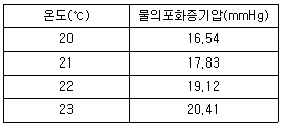
- 52.41%
- 53.63%
- 54.13%
- 55.95%
(정답률: 41%)
87. 다음 중 건식 가스미터 (Gas meter)는?
- Venturi식
- Roots식
- Orifice식
- turbine식
(정답률: 64%)
88. 가스미터에 의한 압력손실이 적어 사용 중 기압차의 변동이 거의 없고, 유량이 정확하게 계량되는 계측기는?
- 루츠미터
- 습식가스미터
- 막식가스미터
- 로터리피스톤식 미터
(정답률: 72%)
89. 광학분광법 은 여러 가지 현상에 바탕을 두고 있다. 이에 해당하지 않는 것은?
- 흡수
- 형광
- 방출
- 분배
(정답률: 64%)
90. 다음 [보기]의 온도계에 대한 설명으로 옳은 것을 모두 나열한 것은?
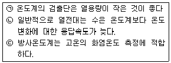
- ㉠
- ㉡, ㉢
- ㉠, ㉢
- ㉠, ㉡, ㉢
(정답률: 53%)
91. 빈병의 질량이 414g인 비중병이 있다. 물을 채웠을 때 질량이 999g, 어느 액체를 채웠을 때의 질량이 874g일 때 이 액체의 밀도는 얼마인가? (단, 물의 밀도 : 0.998g/㎝3, 공기의 밀도 : 0.00120g/㎝3이다.)
- 0.785g/㎝3
- 0.998g/㎝3
- 7.85g/㎝3
- 9.98g/㎝3
(정답률: 44%)
92. 유수형 열량계로 5L의 기체 연료를 연소시킬 때 냉각수량이 2500g이었다. 기체연료의 온도가 20℃, 전체압이 750㎜Hg, 발열량이 5437.6kcal/Nm3일 때 유수 상승온도는 약 몇 ℃인가?
- 8 ℃
- 10 ℃
- 12 ℃
- 14℃
(정답률: 42%)
93. 게겔법에 의한 아세틸렌 (C2H2)의 홉수액으로 옳은 것은?
- 87% H2SO4 용액
- 요오드수은칼륨 용액
- 알칼리성 피로갈롤 용액
- 암모니아성 염화제일구리 용액
(정답률: 57%)
94. 압력 계측기기 중 직접 압력을 측정하는 1차 압력계에 해당하는 것은?
- 액주계 압력계
- 부르동관 압력계
- 벨로우즈 압력계
- 전기저항 압력계
(정답률: 65%)
95. 열전대를 사용하는 온도계 중 가장 고온을 측정할 수 있는 것은?
- R형
- K형
- E형
- J형
(정답률: 73%)
96. 연속 제어동작의 비례 (P) 동작에 대한 설명 중 틀린 것은?
- 사이클링을 제거할 수 있다.
- 부하변화가 적은 프로세스의 제어에 이용된다.
- 외란이 큰 자동제어에는 부적당하다.
- 잔류편차(off- set)가 생기지 않는다.
(정답률: 73%)
97. 가스크로마토그래피에 대한 설명으로 가장 옳은 것은?
- 운반가스로는 일반적으로 O2, CO2가 이용된다.
- 각 성분의 머무름 시간은 분석조건이 일정하면 조성에 관계없이 거의 일정하다.
- 분석시료는 반드시 LP가스의 기체 부분에서 채취해야 한다.
- 분석 순서는 가장 먼저 분석시료를 도입하고 그 다음에 운반가스를 흘려보낸다.
(정답률: 49%)
98. 가스를 일정용적의 통속에 넣어 충만시킨 후 배출하여 그 횟수를 용적단위로 환산하는 방법의 가스미터는?
- 막식
- 루트식
- 로터리 식
- 와류식
(정답률: 62%)
99. 기체 크로마토그래피에서 분리도 (Resolution)와 컬럼 길이의 상관관계는?
- 분리도는 컬럼 길이에 비례한다.
- 분리도는 컬럼 길이에 2승에 비례한다.
- 분리도는 컬럼 길이에 3승에 비례한다.
- 분리도는 컬럼 길이에 제곱근에 비례한다.
(정답률: 63%)
100. 계측기기 구비조건으로 가장 거리가 먼 것은?
- 정확도가 있고, 견고하고 신뢰할 수 있어야 한다.
- 구조가 단순하고, 취급이 용이하여야 한다.
- 연속적이고 원격지시, 기록이 가능하여야 한다.
- 구성은 전자화되고, 기능은 자동화 되어야 한다.
(정답률: 79%)